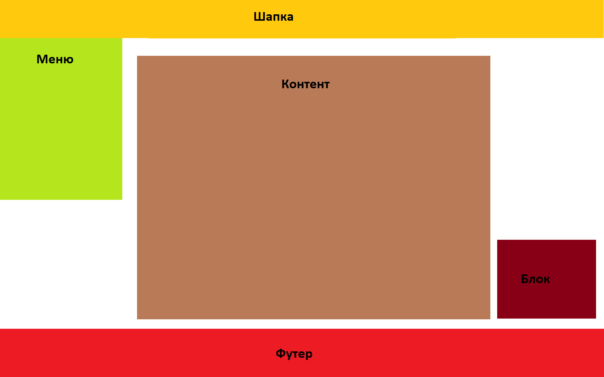

Сверстайте сайт по заданному схематичному изображению в соответствии с вариантом. Шапку и футер выполните по собственному усмотрению. Блоки заполните контентом (текст, изображения) и задайте им некоторый цвет фона для визуализации их положения. Их размер может быть немного изменен при необходимости. В меню поместите набор ссылок.
